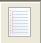
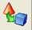
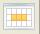
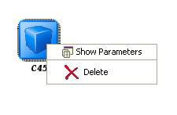

Experiment graph
The experiment graph shows the components of the current experiment and describes the relationships between them. The user can add new components by using the left menu:
This menu has the following categories available:
 Data sets: Modify the data sets of the experiments.
 Preprocessing methods: Preprocess over the initial data sets.
Standard methods: Data mining methods.
 Postprocessing methods: Post-process over the results of standard methods.
Postprocessing methods: Post-process over the results of standard methods.
 Statistical tests: Statistical procedures to contrast the results achieved in the experiment.
Statistical tests: Statistical procedures to contrast the results achieved in the experiment.
 Visualization modules: Show the results of the experiments in an upgraded way.
Connections: Links between the components of the experiment.
Graph Management
The graph allows performing the following operations over its elements:

If you need more information, please go to the Help menu and select Content. There you can get a full version version of the KEEL user's manual.